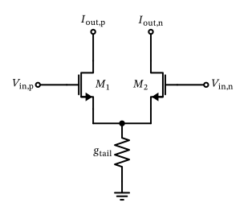
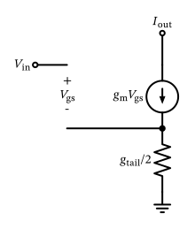
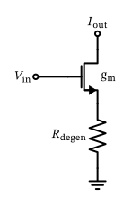

Analog (Integrated) Circuit Design

Figure 29: A differential pair.
For a differential mode of operation we assume that the input common-mode voltage is constant, i.e., \((V_\mathrm{in,p} + V_\mathrm{in,n})/2 = V_\mathrm{CM}\). The differential input voltage \(V_\mathrm{in} = V_\mathrm{in,p} - V_\mathrm{in,n}\), so that \[ V_\mathrm{in,p} = V_\mathrm{CM} + \frac{V_\mathrm{in}}{2} \] and \[ V_\mathrm{in,n} = V_\mathrm{CM} - \frac{V_\mathrm{in}}{2}. \]
For a small-signal differential drive the potential at the tail point stays constant and we can treat it as a virtual ground. The output current on each side is then given by (neglecting \(g_\mathrm{ds}\) and \(g_\mathrm{mb}\) of \(M_1\) and \(M_2\)) \[ I_\mathrm{out,p} = g_\mathrm{m1} \left( \frac{V_\mathrm{in}}{2} \right) \] and \[ I_\mathrm{out,n} = g_\mathrm{m2} \left( -\frac{V_\mathrm{in}}{2} \right). \]
Usually we assume symmetry in the differential pair, so \(g_\mathrm{m1} = g_\mathrm{m2} = g_\mathrm{m}\). The differential output current \(I_\mathrm{out}\) is then given by \[ I_\mathrm{out} = I_\mathrm{out,p} - I_\mathrm{out,n} = g_\mathrm{m}V_\mathrm{in} \tag{12}\]
Usually, the source conductance \(g_\mathrm{tail}\) is realized by a current source and ideally should be \(g_\mathrm{tail} = 0\). If this is the case, then the output currents are not a function of the common-mode input voltage (\(I_\mathrm{tail}\) is set by the tail current source), and \[ I_\mathrm{out,p} = I_\mathrm{out,n} = I_\mathrm{out} = \frac{I_\mathrm{tail}}{2}. \]

Figure 30: Small-signal model of the differential pair half-circuit in common-mode operation.
Formulating KVL for the input-side loop we get \[ V_\mathrm{in} = V_\mathrm{gs}+ \frac{2 I_\mathrm{d}}{g_\mathrm{tail}}. \]
With \(I_\mathrm{out} = I_\mathrm{d}= g_\mathrm{m}V_\mathrm{gs}\) we arrive at \[ I_\mathrm{out} = \frac{g_\mathrm{m}\cdot g_\mathrm{tail}}{2 g_\mathrm{m}+ g_\mathrm{tail}} V_\mathrm{in} \tag{13}\]
\[ g_\mathrm{m}' = \frac{I_\mathrm{out}}{V_\mathrm{in}} = \frac{1}{g_\mathrm{m}^{-1} + R_\mathrm{degen}}. \]

Figure 31: A MOSFET common-source amplifier with resistive degeneration.